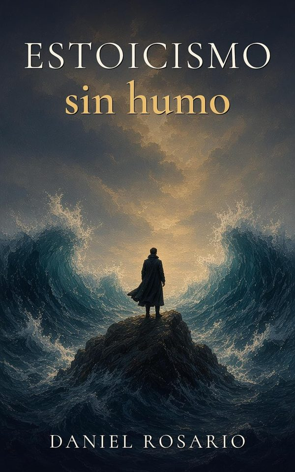
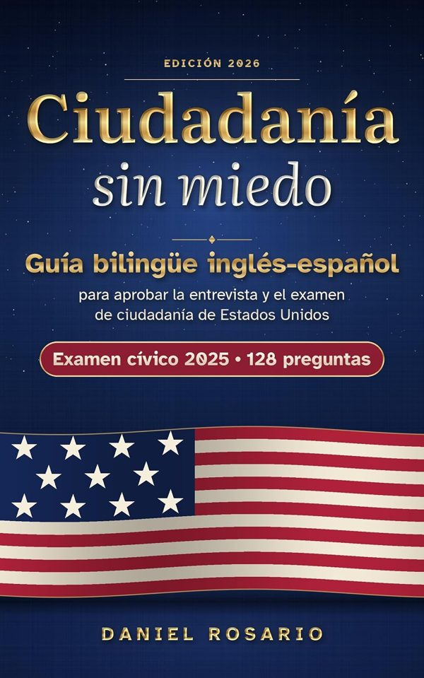
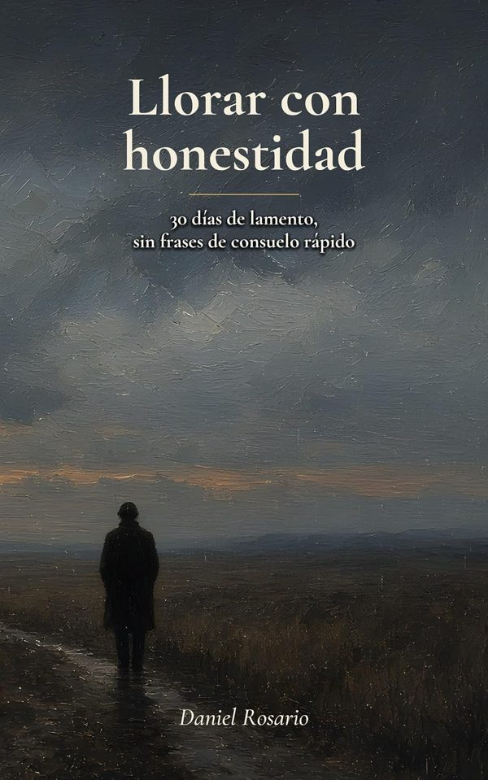
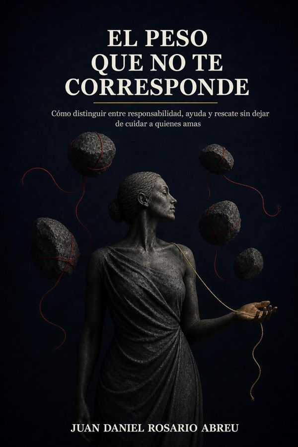
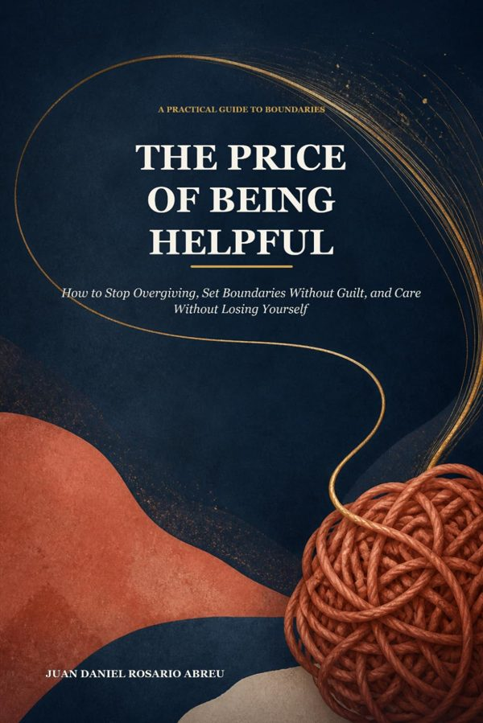
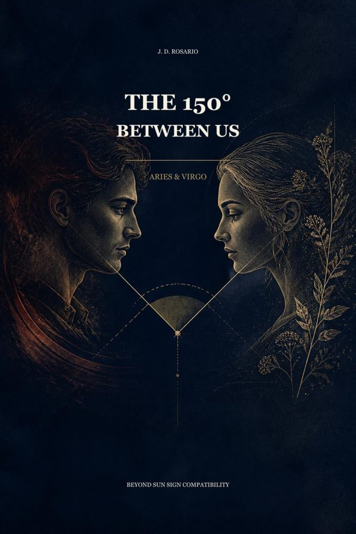

Español
Estoicismo sin humo
Programa de 8 semanas para dejar de pensar demasiado
¿Le das vueltas a todo y no consigues apagar la cabeza? Un programa práctico de 8 semanas con Séneca, Epicteto, Marco Aurelio y la psicología actual.
Libros en español e inglés. Elige el tuyo y cómpralo directo en Amazon.

Programa de 8 semanas para dejar de pensar demasiado
¿Le das vueltas a todo y no consigues apagar la cabeza? Un programa práctico de 8 semanas con Séneca, Epicteto, Marco Aurelio y la psicología actual.

Guía bilingüe inglés-español para la entrevista y el examen de ciudadanía
La entrevista es en inglés. Prepárala en tu idioma: inglés oficial y español frente a frente, con pronunciación escrita tal como se lee.

30 días de lamento, sin frases de consuelo rápido
Un devocional para cuando ya te cansaste de decir «estoy bien». Durante 30 días nadie te va a pedir que dejes de llorar.

Responsabilidad, ayuda y rescate sin dejar de cuidar
No todo lo que pesa es tuyo. Una guía para cuidar sin administrar y ayudar sin rescatar.
Una novela sobre el precio de ser escuchados
Una madrugada, Mara Valdés escucha una grabación que no debería existir: la voz de su hermano, desaparecido hace tres meses.

Stop overgiving, set boundaries without guilt
You can care about people without carrying every problem they bring to you. A practical way to change the pattern.

Beyond Sun-Sign Compatibility
The Aries–Virgo contrast as a symbolic starting point, not a verdict — a guide to the tension between two very different ways of loving.